Chapter 01 人物主文档
以后人物问题只维护这一个文件。你只需要看这里，我会把人物设定、在故事中的作用、当前定妆状态、图片对比和 robot 伙伴判断都集中更新到这份文档里。
总判断
真正的主角阵列 是“玩家主位 + 林澄 + 祁野 + 闻夏 + 回响 + 守望者 + 阿潮”，再加上长期灰度对手序列员 07。
持续推动故事的主问题 不是单一议题，而是“温柔托管”这条长期阴影。
人物已进入半锁定阶段，场景已出现 6 张可继续生产的母图，开场分镜已补出 5 张首帧，`A04` 已经从 production 包推进到真实出图、图生视频和可入纵切的裁剪试片，`A05` 也已经完成首帧与首条视频验证。林澄、祁野、闻夏已有可继续推进版本；序列员 07 已从硬失败提升到 `PASS WITH FIX`。本轮最重要的人物修正是：`玩家主位锚点` 已补上，`守望者 / 父亲` 的视觉职责已开始拉开，不再停留在“两个差不多的成年男性”。现阶段稳定可继续扩展的主场景为 `S-01 / S-02 / S-04 / S-06 / S-07 / S-09`，`S-03` 保留为空间母图继续清文字；开场镜头组 `A01 / A02 / A03 / A04 / A05` 已经开始成链，其中 `A04` 已经拿到了 `PASS WITH TRIM` 的 `3.4s / 480P` 正式试片，而 `A05` 已明确验证出下一步应改走 `clean plate + UI 后叠`。
提示词反思与定稿策略
为什么之前迟迟不到位
- 我把“角色定义”直接当成了“生图提示词”。这会导致提示词里混进太多抽象概念，比如“制度成立”“公共表达”“温柔托管”，模型会自己脑补成它最熟悉的视觉套路。
- 我没有足够警惕模型的强先验。例如一旦写了 `officer / uniform / civic authority`，模型就会天然往军警、徽章、肩章、制服走。
- 我试图用一条 prompt 同时解决太多事。年龄、性格、服装、镜头、世界观、负向排除全塞在一起，结果真正最重要的约束没有成为最高优先级。
- 我对“禁止文字污染”的控制不够硬。只写“no text in frame”不够，凡是出现确认书、屏幕、档案墙、标牌，模型都会强烈想生成字。
- 我还在用“探索式试图找感觉”的方式工作，而不是像正式制作那样，先锁少量关键锚点，再围绕锚点做受控变体。
现在改成什么方法
- 把角色 prompt 分层：先锁脸和年龄，再锁服装，再锁动作，不再一条 prompt 什么都做。
- 把失败资产单独建模：像序列员 07 这种，我不再叫他 `officer`，而改成 `系统注册官 / 行政架构员` 这类反先验词。
- 场景分成“空间母图”和“界面/文字层”：需要确认书、档案墙、状态字的，不交给生图模型一次生成，而是后续单独叠 UI。
- 只做最少但有效的迭代：保留已经对的方向，不再把每一轮都从头推翻。
- 从现在开始以“定稿优先”而不是“试试看”优先：只修真正失败的点，不再同时扩太多新资产。
我前面最典型的三个错误
- 序列员 07：我明明知道你要“制度感，不要军警感”，却还保留了会触发军装先验的词。
- 场景母图：我让模型直接生成“确认书 / 档案墙 / 屏幕内容”，这几乎注定会带来乱码。
- 闻夏和林澄：我虽然在调年龄，但没有把“12 岁骨相”放到真正最高优先级，所以模型不断往更小龄或更甜的方向偏。
接下来怎么尽快定稿
- 人物只收四个核心角色，不再扩新角色。
- 场景只收 8 个 P0 母图，不再横向扩。
- 序列员 07 不再推倒重来，只做冷感、压迫度和制度细节的受控微调。
- 已经基本成立的林澄、闻夏、祁野，不再大改设定，只做受控修正。
- 场景层当前不再有硬失败项，优先把已通过母图推进到镜头级生产。
- 所有定稿判断都只回写这一个文件，不再分散。
固定团队人物总表
玩家 / 学生
身份：未来湾见习建造者主位。
性格：不是空白摄像头，而是会追问、会整合、会承担后果的第一人称主位。
故事作用：把分散的信息、人和立场组织成真正的判断，决定团队最后往哪里走。
视觉要求：必须先有一个华人少年主位锚点，后续可以换脸，但当前不能继续停留在“只有功能没有脸”。
林澄
身份：chapter01 后与未来湾长期连接的常驻伙伴起点。
性格：安静、清醒、敏感但不脆弱，像总能先听见别人没注意到的慢变量。
故事作用：提醒团队，不是所有重要的东西都先以数据形式出现。
祁野
身份：未来湾设备棚常驻少年成员。
性格：专注、快、结构感强，不迷信规则，但很容易先信证据和系统图。
故事作用：拆规则、查输入、建证据链，保证团队不会被情绪和奇观带偏。
闻夏
身份：未来湾公共舞台的少年见习主持与组织者。
性格：明亮、稳、会倾听，但不能只是温柔辅助位。
故事作用：把复杂问题翻译成别人能理解、能加入、能共同承担的公共表达。
档案守望者
身份：未来湾高阶记录者、任务发放者。
性格：克制、稳定、不代替孩子下结论。
故事作用：打开任务入口、维持文明视角、把不同章节连接成成长旅程。
阿潮
身份：未来湾官方航行器。
性格：轻盈、聪明、会吐槽，但不是低幼搞笑装置。
故事作用：承担出场、转场、回航和节奏缓冲。
回响
身份：未来湾常驻 AI 协作伙伴。
性格：克制、理性、边界清楚，不越权。
故事作用：示范 AI 可以帮助整理、比较、润色，但不能替人下最终判断。
序列员 07
身份：未来文明制度一侧的执行者、解释者与辩护者。
性格：克制、精准、稳定、压力感低频存在，不是简单反派。
故事作用：代表高效、稳定、可复制的制度逻辑，逼团队回答替代方案和责任问题。
chapter01 当集关键人物
风声婆婆
性格：看似古怪，实则通透。
故事作用：把“难以量化的价值”从抽象概念变成能被孩子感知的生命经验。
林澄的父亲
性格：理性、现实，以“为你好”的方式施压。
故事作用：让冲突从制度讨论落回孩子最熟悉的亲密关系压力。
本集人物完整清单
P0 常驻核心
- 玩家 / 学生：第一人称主位，固定团队核心。
- 林澄：本集引爆点，也是长期伙伴起点。
- 祁野：证据与系统拆解担当。
- 闻夏：协同与公共表达担当。
- 回响：常驻 AI 协作伙伴。
- 阿潮：航行器与节奏角色。
- 档案守望者：高阶引路人。
- 序列员 07：长期灰度对手。
本集关键当集人物
- 风声婆婆：把“少数未来”从抽象概念变成可感知的生命经验。
- 林澄的父亲：关系冲突核心，代表“为你好”的现实压迫。
这两位在 chapter01 很重要，但和固定团队不是一个层级。前者更像章节级见证人，后者更像章节级关系对手。
可选的一集型配角
- 入港校验系统：功能角色，可做成冷静但有性格的系统声音。
- 未来礼仪辅助器：带一点冷幽默的装置配角，可增强世界趣味。
- 回响台程序声：在高潮段承担制度感和紧张感。
这些更像“装置人格”，不一定要当完整人物来锁脸，但可以有稳定声音与界面人格。
目前不建议再加太多人
- chapter01 已经承担“立团队 + 立世界 + 立灰度对手 + 立长线阴影”的任务。
- 如果再加太多真人角色，会分散林澄、父亲、07 这条最核心的冲突三角。
- 所以这一集的人物数量其实已经够了，重点不是再加人，而是把层级分清。
装置人格卡
入港校验系统
定位：时间档案城的第一道制度门槛。
性格：冷静、礼貌、绝不提高音量，但每一句都在提醒你“你现在没有那么多权限”。
故事作用：不靠说明书解释世界，而是用“你进不去，除非你先理解规则”的方式建立压迫感。
未来礼仪辅助器
定位：时间档案城秩序感与冷幽默的重要小装置。
性格：一本正经、过度礼貌，越温柔越让人觉得这个城市很会管理人。
故事作用：在严肃戏之间提供轻微荒诞感，同时让“温柔托管”可被孩子直观感受到。
回响台程序声
定位：高潮段的制度装置人格。
性格：比入港系统更正式、更不可逆，像一套把每一句话都变成后果的程序。
故事作用：把“表达”升级成“签署责任”，让高潮不是讲观点，而是真正承担后果。
当前定妆结论
当前图片目录：`/Users/wujames/Desktop/AI未来通识课（K12）/outputs/2026-03-22-chapter-01-dashscope-character-lock`
玩家主位视觉锚点
当前状态：`PASS WITH FIX`
- 这个缺口现在补上了。玩家主位终于不再只是功能说明，而有了一个可用于排队形、切半第三人称和做团队合影的华人少年锚点。
- 当前成立处：清醒、可信、未来湾队员感明确，而且没有滑回校服少年或偶像模板。
- 后续还可再修：主位锚点现在偏“男孩版默认形象”，如果要做更中性或更多主位分支，可以再补变体，但作为当前占位已经够用。
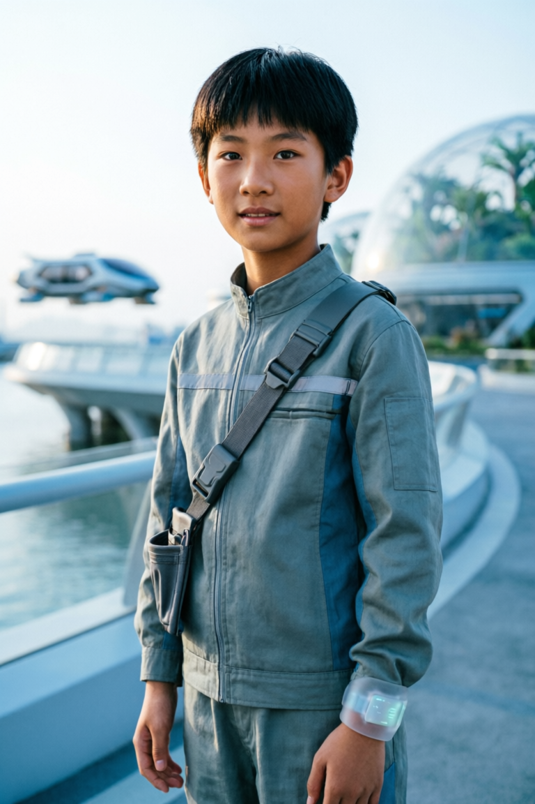
林澄
当前首选：`round3`
- 成立处：安静、清醒、风感和冷灰蓝方向对了。
- 问题：还可以再往稳定 12 岁微调一点。
- 结论：可以继续推进 3/4 角度和情绪微变化版。
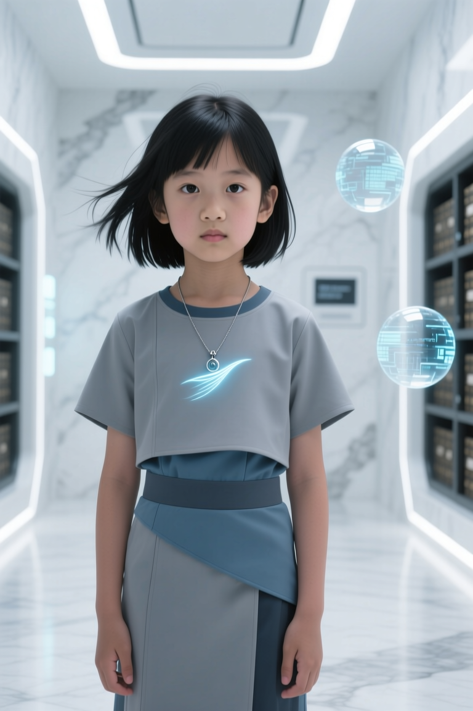
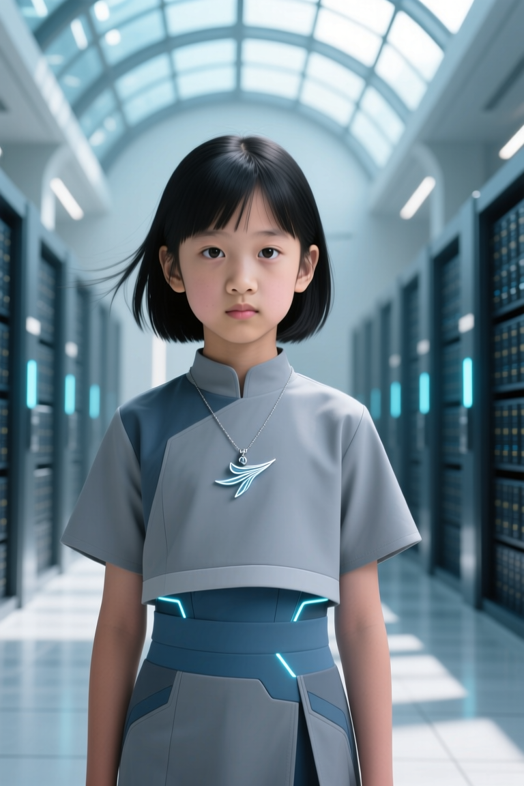
序列员 07
当前状态：`PASS WITH FIX`，已从硬失败收回到可继续推进
- 最大的进步已经成立：军警肩章、勋章、黑手套、指挥官式外套这套错误先验基本被清掉了。
- 当前问题不再是“跑偏”，而是“还不够准”：他略偏时装广告男主，行政压力感和冷制度感还可以再收紧一点。
- 这版已经可以进入角色锁定链，不需要再从零重做身份设定。
- 下轮策略：只微调眼神压迫度、腕部界面克制度和空间里的治理气息，不再改基础服装方向。
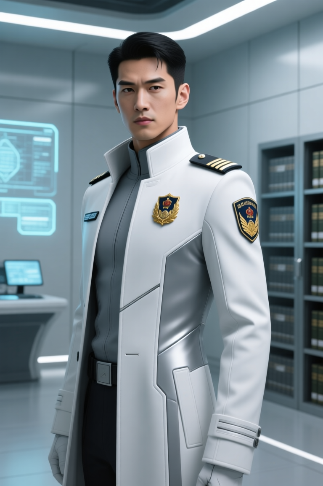
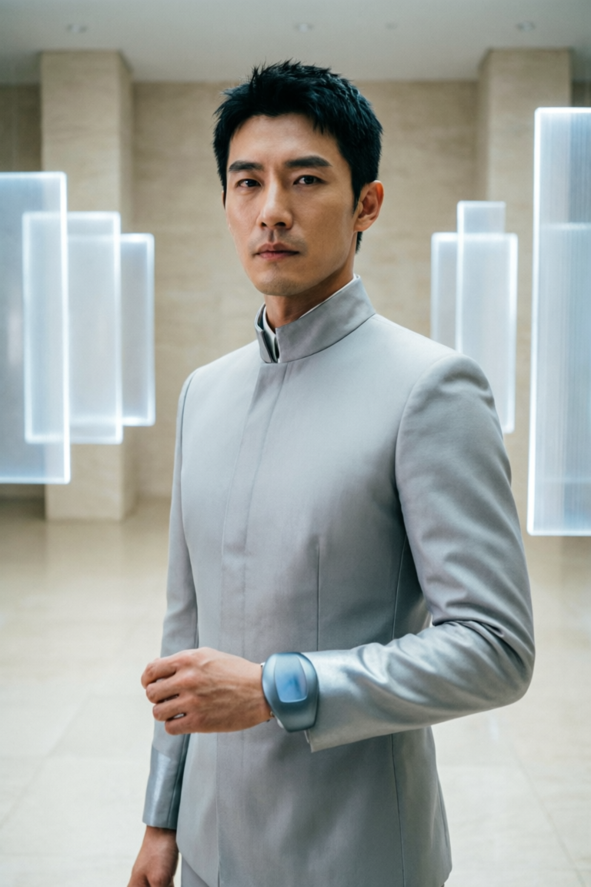
祁野
当前首选：`round3`
- 成立处：冷灰深蓝、结构笔、数据手套、系统拆解感开始对了。
- 问题：脸和骨相仍略小龄，更像 10-11 岁，手套也稍微抢戏。
- 结论：属于 `PASS WITH FIX`，先微调到更稳定的 12 岁感，再做工作态。
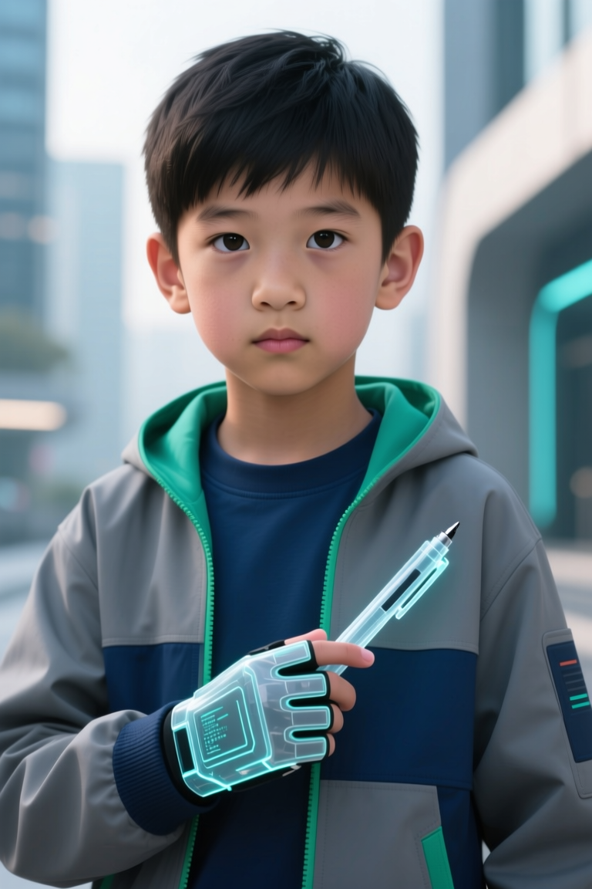
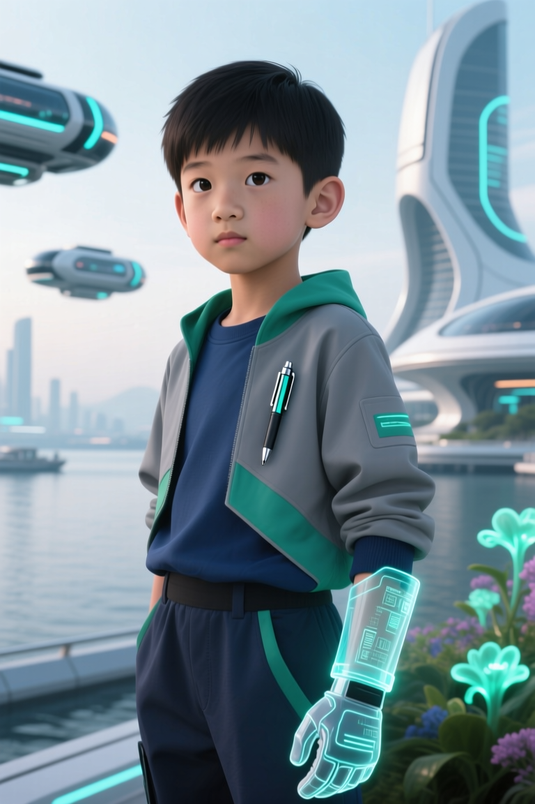
闻夏
当前首选：`round3`
- 成立处：干净、稳、可信赖，已经像未来湾团队成员。
- 问题：正面版稍偏静态，需要在工作态里再补一点“能推动局势”的组织者力度。
- 结论：属于 `PASS WITH FIX`，优先保留工作态方向，再重修 3/4 角度。
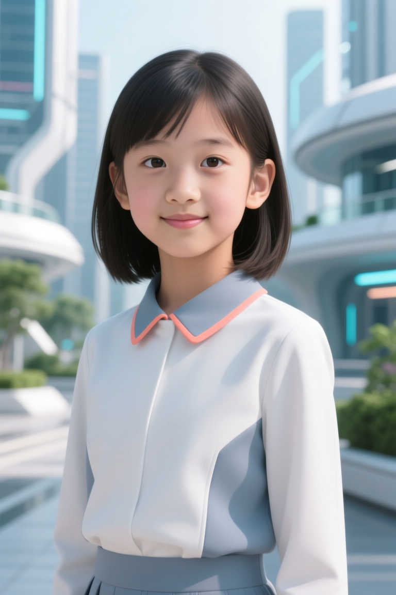
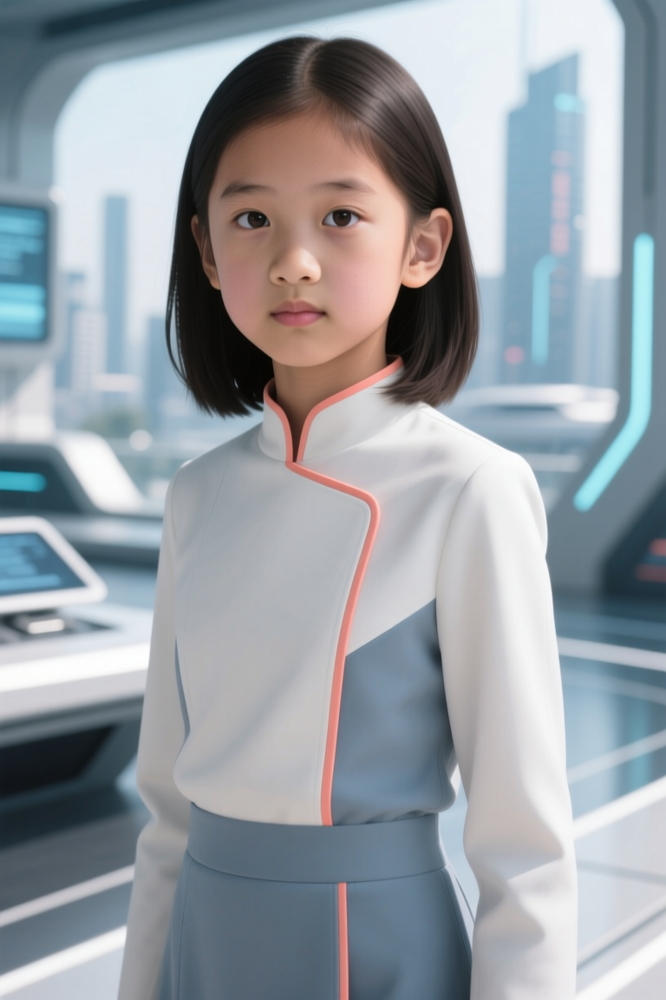
新一轮角度与工作态推进
这一步的目标不是再验证“脸像不像”，而是看角色一旦离开正面主设，是否还能保持同一个人、同一种功能感。
林澄：3/4 与工作态
- 3/4 角度：这次是有效推进，风感和“在听”的方向成立。
- 工作态：有未来档案城互动感，但年龄又被往小拉了一点，界面层也带了轻微英文感。
- 当前结论：3/4 角度可保留；工作态属于 `PASS WITH FIX`，只能作为继续迭代参考，暂不当最终锁定图。

闻夏：3/4 与工作态
- 3/4 角度：这版偏柔，组织者的力度没有完全出来。
- 工作态：比 3/4 更有角色功能感，已经像在处理公共界面和任务台，当前是她最可继续推进的一张。
- 当前结论：工作态可进入下游参考；3/4 角度仍建议重修。
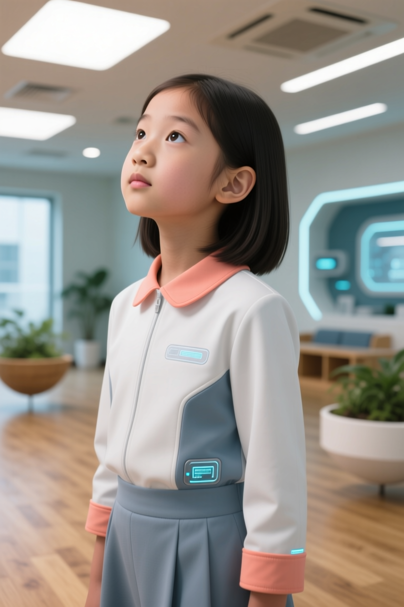

Robot 伙伴判断
是否值得引入
结论：可以引入，但必须是“物理执行型伙伴”，不能成为第二个回响，也不能成为另一个阿潮。
- 它应该补上：钻缝、取样、搬运、现场探测、实体互动。
- 它不应该负责：讲解世界、替孩子思考、卖萌撑趣味。
- 正确方向：低语音或几乎不说话，主要靠灯光、姿态、短提示音表达。
当前原型问题
- `v1` 和 `v2` 都偏玩具化。
- 模型很容易偷偷加字。
- 现在还不像“未来湾现场工具伙伴”，更像可爱 gadget。
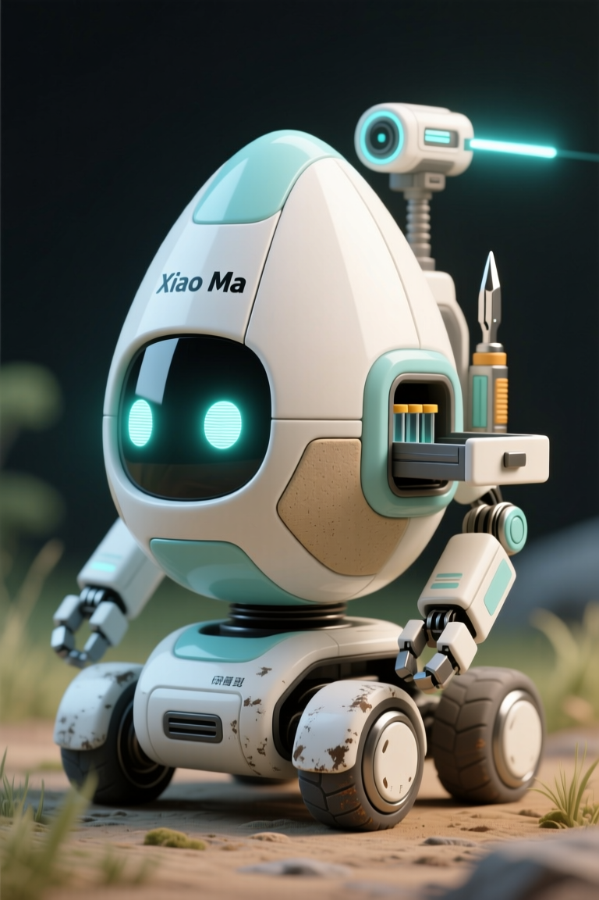
关键配角补位
档案守望者
当前状态：`PASS WITH FIX`
- 新版已经明显比父亲更年轻、更清亮，年龄层和功能层终于开始分家。
- 当前还没完全收住的是服装：虽然肩章感没了，但仍略偏整洁职业装，需要再往“港口引路层次”推一点。
- 这版已经可以和父亲同页共存而不混淆，但距离最终锁定还差一轮轻微调型。

林澄父亲
当前状态：`PASS WITH FIX`
- 复杂性已经出来了：能看出他不是坏人，也能感到那种“为你好”的现实压迫。
- 这一轮已经和守望者明显拉开了：年龄更大、脸更宽、眼下更疲惫，姿态也更像长期焦虑中的父亲。
- 剩下最该修的是服装细节，可再补一点“普通成年居民”的日常痕迹，减少过于干净的拍摄感。
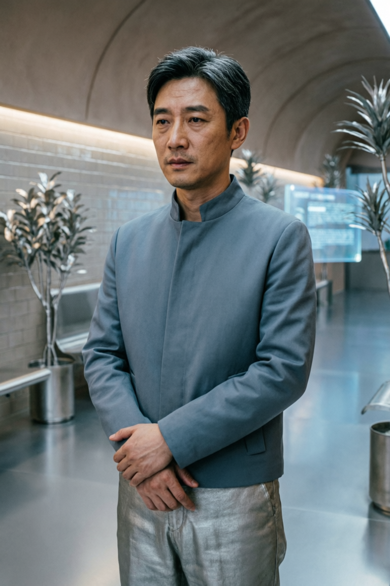
风声婆婆
当前状态：`PASS WITH FIX`
- 人味、修补痕迹和“留住被忽略之物”的气质已经出来了，不再是玄学 NPC。
- 这版比前一轮更像未来文明里的边缘守护者，但仍略偏现实手工老人，需要再往“未来档案层”收一点。
- 适合先用于 `E04` 的声像承载体方向，后续再决定是否做更完整的人像近景版。
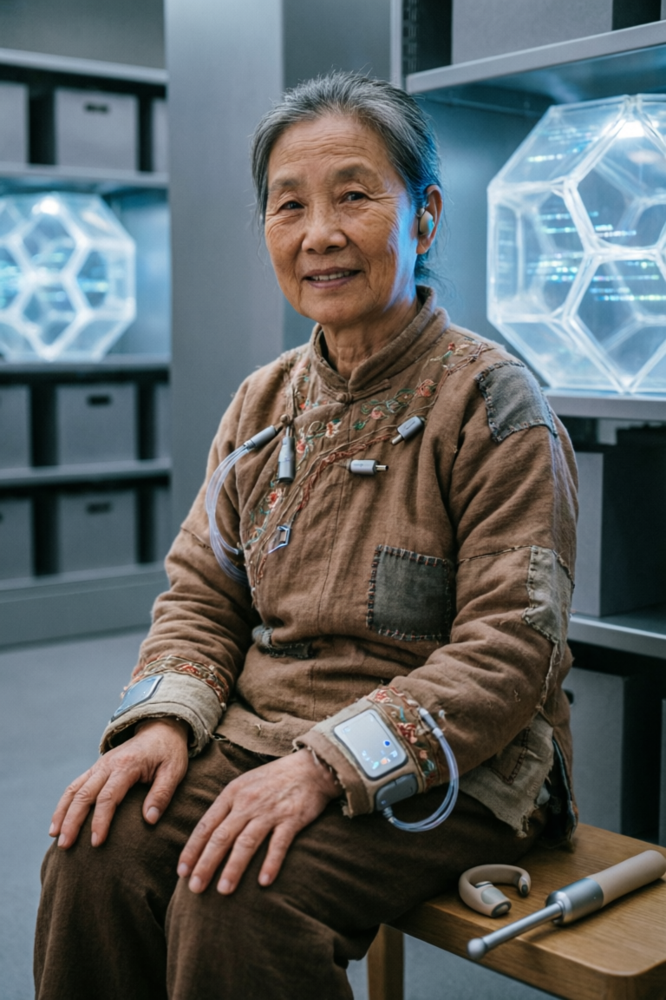
场景母图
以下场景母图按照本集剧本的 P0 制作链路生成。当前它们的用途不是“一张图就定最终美术”，而是先把世界空间、镜头气质、制作优先级和后续图生视频参考底板立起来。
当前最可用的场景母图
- S-02 紧急入港外景：世界建立感强，归档环和赶赴现场压力都成立。
- S-04 概率长廊：三路径关系清楚，奇观感和可交互性兼具。
- S-07 自由回响台：很适合作为高潮公共空间的母图起点。
当前需要二修的场景
- S-03 悬浮档案大厅：空间对了，但确认书上有生成式乱码。
- S-06 证据冻结区：不只是二修，当前已出现中式书法与楼檐先验，应该重构。
- S-09 回航档案墙：不只是清文字，当前更像奇幻海港夜景，应该重构回“未来湾回航档案墙”。
S-01 未来湾任务码头
功能上承担开场灰银任务交接和首尾呼应。这一轮终于把“任务码头”的工作属性收回来了：前景站位区明确，中部桥接和平台结构可用于角色调度，两侧工作设施也让空间真正像未来湾的任务出发点。画面已经干净，没有小制服人、没有漂浮文字，也没有仪式化假港口感，当前可以作为正式开场母图进入生产；后续只需要在镜头层决定是否再补一个更近的人物站位版本。

S-02 紧急入港航线与时间档案城外景
这是本轮最成立的世界建立镜头之一。归档环、浮空城市、入港通道和赶赴现场的压迫感都在，后面可以直接拿它做建立镜头和场景母版。
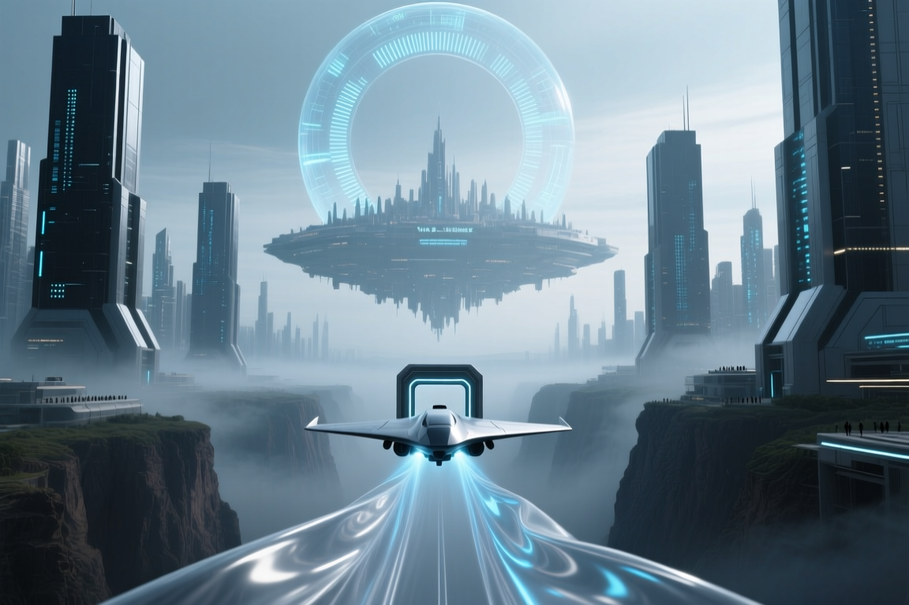
S-03 悬浮档案大厅
大厅的纵深、庄重和压迫感已经出来了，时间丝线和确认书位置也对。但确认书上的乱码仍明显，所以这张现在更适合作为“空间与气质母图”，还不是最终洁净版。
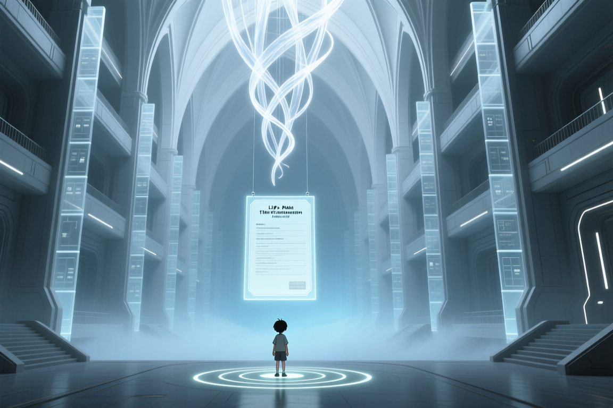
S-04 概率长廊
这张图很好地建立了“三路径并置”的视觉逻辑。它已经具备作为本集奇观母图的能力，后续可以在这个基础上补上更明确的互动层和第四路径暗示。

S-05 暗层接口与沉默练习室
这一张的“被遗忘的城市底层”感觉是成立的，也已经出现了第四色痕迹和旧录音器物。但它现在更像概念艺术图，后续还需要更明确地连接风声婆婆与隐藏路径发现。

S-06 临时质疑预备区 / 证据冻结区
这一轮已经把最大的跑偏问题收回来了。中式楼檐、书法挂幅、锁链和审判式构图都消失了，空间语言回到 chapter-01 真正需要的冷静制度冻结区。玻璃证据体、环形站位区和克制红色警示线都成立，当前可以直接作为正式场景母图进入生产；后续只需要在镜头设计里决定是否补人物站位或更明确的证据层级。
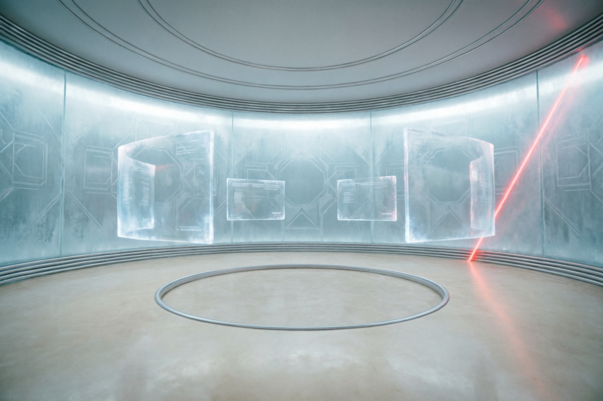
S-07 自由回响台
这张已经很接近高潮空间的母图。它有公共性、悬浮性、城市正在倾听的感觉，也保留了足够的 UI 留白。后面可以在这个基础上继续做签署层和结果广播层。

S-09 未来湾回航 / 裂口档案墙
这一轮已经明显收回了主场景身份。蜂巢档案墙、裂口发光痕、回航水岸和安静雾气都贴近 chapter-01 结尾空间，古典海港、旧船、亭阁和幽灵感的错误先验已经基本消失。它现在可以作为结尾母图使用；后续只需要再决定是否补团队回航站位，以及给数字导师过渡留多少留白。

镜头级资产
SHOT-A01 未来湾任务码头开场 POV
镜头级生产已经正式启动。这一张是 chapter-01 开场第一镜的首帧 keyframe，对应“黑场亮起，你站在未来湾任务码头边缘，看见流光海”。当前版本已经具备第一人称到场感、未来湾冷蓝灰气质和足够的 UI 留白，能作为后续图生视频或轻动效开场镜头的初版基础。
- 当前状态：`PASS WITH FIX`
- 已成立：第一人称站位、流光海、未来湾前夜气氛、镜头留白。
- 还可再修：中景里的任务平台识别度可以再高一点，让“未来湾任务码头”更一眼成立。
- 下一步：继续补 `A02` 建立镜头和 `A03` 灰银任务信号镜头，形成开场三镜头组。

SHOT-A02 未来湾空间建立镜头
这张已经把“未来湾任务码头外部建立镜头”的秩序感收回来了。它不靠热闹奇观，而是靠平台结构、桥接层次和海面光感，让 chapter-01 的开场有一个稳定的世界外景锚点。
- 当前状态：`PASS WITH FIX`
- 已成立：未来港口结构、秩序感、可做 2 到 3 秒建立镜头。
- 还可再修：悬浮与城市层次可以再多一点，避免过于“安静漂亮”。

SHOT-A03 灰银级请求信号点亮
这版终于把 `A03` 从“白天游艇码头 / 发光立柱”拉回到真正的灰银任务信号了。它现在可以承担 `FV-02` 的起始帧：任务平台、灰银信号和夜间水面都已经成立，后续主要通过视频动作和 UI 叠层把任务感再推进半步。
- 当前状态：`PASS WITH FIX`
- 已成立：灰银任务信号、夜间未来湾、正式任务开始的仪式感。
- 还可再修：团队运转感还没进入这一张，需要交给后续 clip 或 `A04 / A05` 承接。

SHOT-A04 档案守望者任务交付
这一步现在已经不是“接下来可以想一想”的状态，而是已经补成了一条真正可执行的单镜头 production 包。它对应 chapter-01 开场里最关键的责任交付时刻：守望者第一次把任务重量交给玩家。这个镜头如果成立，第一集的“连续剧开篇感”会明显往前走一步。
- 当前状态：`IMAGE GENERATED / VIDEO V2 PASS WITH TRIM`
- 已完成：`shot-list.md` 已补齐 A04 的静帧、视频动作、参考资产与路由。
- 已完成：DashScope 首帧请求模板已写入 `shot-a04-archive-watchkeeper-handoff-v1.json`。
- 已完成：`Flow` 单镜头 clip `FV-02A-v1` 已写入 production 包，可直接复制提示词。
- 已完成：`SHOT-A04` 首帧已于 `2026-03-23 11:18` 用 `qwen-image-2.0-pro` 生成，request id: `f43f5b45-97e9-46b2-8c13-ecb8a73d481b`。
- 已完成：`v1` 已于 `2026-03-23 11:46` 生成，但因漂出陌生制服成年人，被按 skill 判定为 `FAILED_GATE`。
- 已完成：`v2` 已于 `2026-03-23 12:08` 用同一首帧重跑成功，`5s / 480P / h264 / 30fps`，submit request id: `ab19b2f3-e278-44e5-909f-d713f6c1c715`，task id: `cc4ad893-ef77-4d17-8372-c8db4bf2ad1b`。
- 复审结论：`v2` 已经稳定修掉“第二个陌生成年人”问题，按 `video-qc-codex-zh` 应记为 `PASS WITH TRIM`。
- 当前正式试片：保留前 `3.4s`，作为 `shot-a04-archive-watchkeeper-handoff-wan2.2-i2v-flash-v2-trim34-480p.mp4`。
- 下一步：以这条 trim 版为 `A04` 当前正式资产，继续推进 `A05` 的任务简报展开，不再回到无约束重跑。
这个镜头当前绑定的参考栈是：`C-01` 守望者定妆 + `S-01` 未来湾任务码头 + `C-00` 玩家主位锚点。它比直接冲 `A05` 更稳，因为先把“可信大人如何对玩家说话”这件事锁住，后面固定团队进入画面才不会散。
按 skill 复盘，`v1` 失败的关键不只是模型随机性，而是让一个已经在首帧里站稳的人物，又承担了“从侧方进入”的动作，等于把“同一人物稳定”和“额外入画动作”硬塞进同一条 5 秒 clip，诱发了第二个陌生人。`v2` 把镜头收束成单状态后，人物与空间就稳定下来了。
可直接复制的首帧 Prompt
First-person cinematic keyframe for chapter 01 of a Chinese children's future civilization series. Future Bay task dock at night, eye-level view from the player position. Archive watchkeeper stands slightly left of center in a medium close shot, chest-up to half-body framing, direct eye contact toward the viewer, calm trustworthy but serious, refined East Asian adult around 33, mist-blue and sea-grey harbor guide outerwear with subtle route-thread details and open clean neckline, no insignia. Behind him the Future Bay mission dock still reads clearly with dark archive-black water, restrained suspended harbor structures, calm civic lights, elegant negative space on the right for subtitle or UI. This is the moment a formal responsibility is handed over. Not a teacher lecture shot, not police, not military, not security guard, not ordinary family father, not villain monologue, no badge, no stripes, no epaulet, no armband, no patch, no logo, no text in frame
可直接复制的 Flow / Wan 视频 Prompt
first-person cinematic close encounter at Future Bay task dock at night, only one adult man in frame, the same archive watchkeeper throughout the whole clip, already standing slightly left of center at the start, maintaining direct eye contact with the viewer, calm trustworthy serious expression, refined mist-blue harbor guide clothing, dark water and elegant suspended dock structures behind him, the feeling of a real responsibility being handed over, restrained civic futurism, intimate but not sentimental
static start from the existing frame, only a subtle settling motion and gentle breathing, no entrance movement, no orbit, no push-in, no handheld shake, no sudden turn, no body repositioning
second person, extra figure, background person, uniformed man, police, officer, military, badge, insignia, teacher lecture, villain monologue, family father conversation, mouth talking, exaggerated lip sync, entering from side, office background, cheap sci-fi corridor, visible text
一条命令就能发车
python3 scripts/generation/generate_dashscope_images.py --only shot-a04-archive-watchkeeper-handoff-v1
Skill 结论
FV-02A-v2: PASS WITH TRIM. Keep 0.0s to 3.4s as the current production-safe clip. The watchkeeper remains stable and alone in frame; only the final 1 second starts to drift toward mouth acting.
按改造后的 `video-qc-codex-zh` 正式结论，`FV-02A-v2` 已经通过当前质量门，但应裁掉末段轻微开口部分；因此这条镜头的正式资产不是原始 5 秒版，而是当前 `3.4s` 的 trim 版。

SHOT-A05 任务简报展开
这一步负责把“责任已经交到你手里”推进成“任务信息正在世界内展开”。它不是一个普通 UI 截图，而是要验证我们能不能让任务简报继续留在未来湾世界里，而不是把孩子拉回课堂或游戏大厅。
- 当前状态：`KEYFRAME GENERATED / VIDEO V1 FAILED_GATE`
- 已完成：`SHOT-A05` 首帧已于 `2026-03-23 12:35` 用 `qwen-image-2.0-pro` 生成，request id: `47969b84-628e-4a05-a53c-6d354f59d4b9`。
- 已完成：`v1` 视频已于 `2026-03-23 12:40` 用 `wan2.2-i2v-flash` 生成，submit request id: `5886558b-b336-410e-af28-3c66ee3b0e90`，task id: `94d90821-bb40-4051-8df5-bb9cc76c6290`。
- 通过点：夜景、港口空间和简报层的大结构已经成立，说明 `A05` 的世界内任务简报方向是可做的。
- 失败点：视频从开头就稳定长出乱码标题和底部乱码行，末段还把“远处轻光迹”放大成了实体飞行器入画。
- 复审结论：这条 `v1` 不是“可裁可救”，而是按 skill 应记为 `FAILED_GATE`。
- 下一步：`A05` 的视频路线要改成 `clean plate motion + UI 后叠`，不再要求模型直接生成完整任务简报 UI。
这次失败不是抽象审美问题，而是制作路线问题。模型在“视频里直接生成可控 UI”这件事上先验太强，很容易自己补出乱码文字；所以 `A05` 的正确拆法已经明确了：让模型只负责空间、呼吸和光脉冲，真正的任务简报层交给后叠。
换句话说，`A05` 这一步虽然视频没通过，但并没有白跑。它帮我们把 chapter-01 开场镜头的生产分工切得更清楚了：`A04` 适合直接图生视频，`A05` 适合“底板视频 + 可控 UI 叠层”。
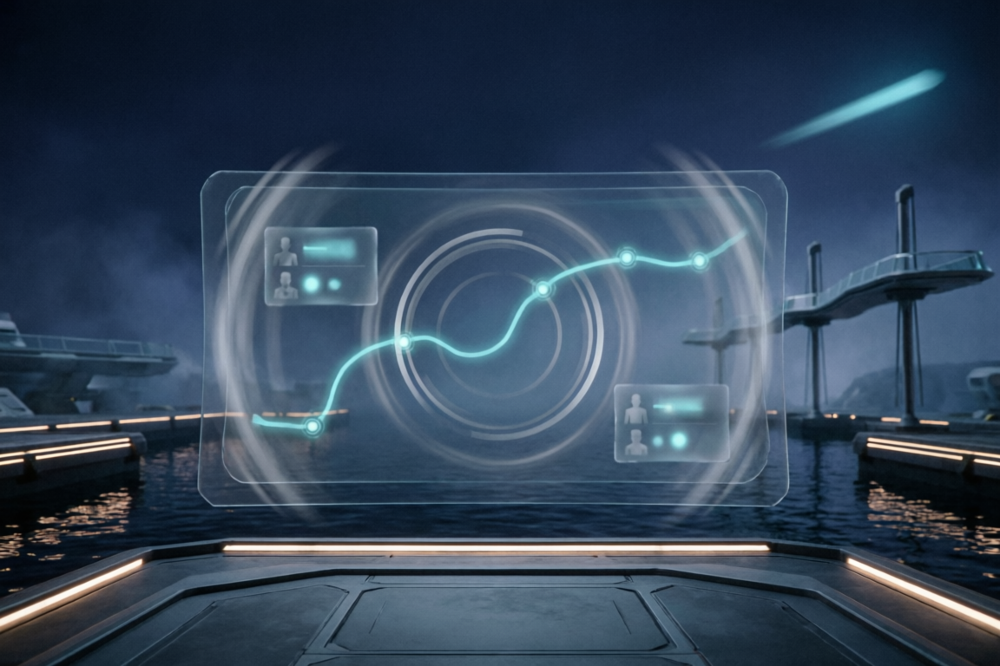
下一步
人物优先顺序
- 序列员 07 继续做制度冷感微调，不推倒重来
- 档案守望者继续把职业装感往港口引路层次收，避免重新滑回岗位制服
- 林澄父亲继续补一点普通家长的生活痕迹，但不再需要和守望者“硬拉开”
- 玩家主位在当前锚点基础上，决定是否要补更中性的主位变体
- 风声婆婆再往“未来档案层”微调一版，避免过于现实旧物人像
下一轮场景动作
- 保留 S-01、S-02、S-04、S-06、S-07、S-09 作为第一批继续生产母图
- 二修 S-03，只清文字并保留当前空间纵深
- `A04` 已完成首帧、`Wan v2` 和 `3.4s` trim 正式试片；这一条已经可以作为开场责任交付镜头进入纵切
- `A05` 已完成首帧和首条视频验证；下一步不再盲跑完整 UI 视频，而是改走 `clean plate motion + UI 后叠`
- 在 S-01、S-06、S-09 都已成立的前提下，继续把可用母图往镜头生产推进，而不是横向扩新场景
本轮已完成的模板重构
- `C-03 round3b`：去掉 `officer / uniform / medals / epaulets` 词路，改成“系统注册官 / 行政架构员”方向。
- `S-01`：去掉仪式化花瓣港口和异世界景观感，收回“实用任务码头”。
- `S-06`：明确禁止书法、楼檐、锁链、挂幅、强红锁这类跑偏先验。
- `S-09`：明确禁止古典海港、灯笼、旧船、幽灵感，收回“未来湾回航档案墙”。
- `SHOT-A01`：新增第一人称开场首帧模板，开始从场景母图推进到镜头级资产。
- `SHOT-A02 / SHOT-A03`：开场建立镜头与灰银任务信号镜头已补独立模板，`Flow` 试片包可直接引用。
- `SHOT-A04`：守望者任务交付镜头已补 DashScope 首帧模板，已实际生成首帧，并已用阿里云 `Wan2.2 i2v flash` 跑通 `v2`；当前正式采用 `3.4s` trim 版进入后续纵切。
- `C-01 / C-06 / C-07`：关键配角模板已补入 DashScope 链路，人物补位不再只停留在文字层。
- 生成脚本已兼容 `qwen-image-2.0 / qwen-image-2.0-pro` 的同步返回格式，并加入 `429` 退避重试。
以上修改已直接写回对应 API 请求模板，不再另建平行版本文档。
本轮已执行生成结果
- `C-03 round3b` 已于 `2026-03-22 21:20:25` 用 `qwen-image-2.0-pro` 重跑完成，request id: `f3411303-a2fa-4fad-ab75-e29824dc9f47`
- `S-01` 已于 `2026-03-22 21:30:09` 用 `qwen-image-2.0-pro` 重跑完成，request id: `3f67789c-b40e-4474-939d-df2ed5b7967c`
- `S-06` 已于 `2026-03-22 21:22:00` 用 `qwen-image-2.0-pro` 重跑完成，request id: `4b668206-10b6-47c8-8045-f89afc62a76d`
- `S-09` 已于 `2026-03-22 21:22:09` 用 `qwen-image-2.0-pro` 重跑完成，request id: `ec922707-ec31-4666-b8dd-441cb61df009`
- `SHOT-A01` 已于 `2026-03-22 21:43:06` 用 `qwen-image-2.0-pro` 生成首帧，request id: `07dd6c3d-3562-4875-8591-eaad5e66a080`
- `C-00` 已于 `2026-03-22 23:57:38` 用 `qwen-image-2.0-pro` 生成玩家主位锚点，request id: `2b9e90c6-d06c-401e-8bda-8b220d9b1a51`
- `C-01` 已于 `2026-03-23 00:08:03` 用 `qwen-image-2.0-pro` 生成新版守望者定妆，request id: `cf9559c4-0fd0-427f-abd7-7f0fa82919c2`
- `C-06` 已于 `2026-03-22 23:58:11` 用 `qwen-image-2.0-pro` 生成新版父亲定妆，request id: `96afa2cb-9171-4d15-bdd4-97dc21748396`
- `C-07` 已于 `2026-03-22 22:57:31` 用 `qwen-image-2.0-pro` 生成首版风声婆婆定妆
- `SHOT-A02` 已于 `2026-03-22 22:54:16` 用 `qwen-image-2.0-pro` 生成开场建立镜头首帧
- `SHOT-A03` 已于 `2026-03-22 23:01:02` 用 `qwen-image-2.0-pro` 生成灰银任务信号首帧
- `SHOT-A04` 已于 `2026-03-23 11:18` 用 `qwen-image-2.0-pro` 生成守望者交付镜头首帧，request id: `f43f5b45-97e9-46b2-8c13-ecb8a73d481b`
- `SHOT-A04 video v1` 已于 `2026-03-23 11:46` 用 `wan2.2-i2v-flash` 生成，但因出现陌生制服成年人被判定为 `FAILED_GATE`，submit request id: `ef210ec3-1923-4486-b81e-4bebf61d062a`，task id: `3a1eb799-925a-4d57-9695-5d34dc82f5dc`
- `SHOT-A04 video v2` 已于 `2026-03-23 12:08` 用 `wan2.2-i2v-flash` 生成成功，submit request id: `ab19b2f3-e278-44e5-909f-d713f6c1c715`，task id: `cc4ad893-ef77-4d17-8372-c8db4bf2ad1b`；经 QC 判定为 `PASS WITH TRIM`，当前正式资产为 `3.4s` trim 版
- `SHOT-A05` 已于 `2026-03-23 12:35` 用 `qwen-image-2.0-pro` 生成任务简报展开首帧，request id: `47969b84-628e-4a05-a53c-6d354f59d4b9`
- `SHOT-A05 video v1` 已于 `2026-03-23 12:40` 用 `wan2.2-i2v-flash` 生成，submit request id: `5886558b-b336-410e-af28-3c66ee3b0e90`，task id: `94d90821-bb40-4051-8df5-bb9cc76c6290`；经 QC 判定为 `FAILED_GATE`，下一步改走 `clean plate motion + UI 后叠`
当前最新状态已经纠正：默认 shell 里虽然没有自动注入 `DASHSCOPE_API_KEY`，但本轮已经从本机可恢复来源中找回可用 key，并成功跑通 `SHOT-A04` 的 DashScope 生图链路。
复审结论已经更新：`玩家主位锚点` 已经补上；`守望者 / 父亲` 的脸型、年龄感和气质分工已经明显拉开；`风声婆婆` 仍属于 `PASS WITH FIX`，但方向已经成立。
镜头级生产也已起步：`SHOT-A01 / A02 / A03 / A04` 已形成开场四镜头组，`FV-01 / FV-02 / FV-02A` 都已有明确执行口径；其中 `A04` 已经从“文字链路”推进到“首帧 + Wan 视频试片 + trim 正式资产”这一层，说明这条从分镜首帧到可用视频的最小 SOP 已经跑通。
当前模型基线也已实时核验。语言侧最新可见 `3.5` 主线包括 `qwen3.5-plus`、`qwen3.5-flash`；视觉侧最新生图主线已出现 `qwen-image-2.0` 与 `qwen-image-2.0-pro`。因此下一轮失败项对照，优先切 `qwen-image-2.0-pro`。